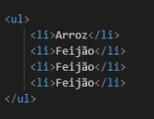
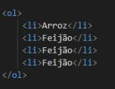

Podemos usar listas em HTML para para fazer um lista de tópicos em um site, ou ainda para para aqueles menus com várias funcões, claro que para isso precisariamos estilizar com o CSS que não é o foco no momento.Podemos dividir as listas em ordenadas e não ordenadas.
Nas listas não ordenadas, o marcador é dado através de pontos na frente da palavra ou frase. Conforme exemplo abaixo:
As tag utilizadas para criação de listas não ordenadas são:
A tag é "ul" - Para abertura da lista;
A tag "li" - Usada para o item da lista;
Já nas listas ordenadas, o marcador é dado através de números, em ordem crescente, começando em 1. Conforme exemplo abaixo:
As tag utilizadas para criação de listas ordenadas são:
A tag é "ol" - Para abertura da lista;
A tag "li" - Usada para o item da lista;
